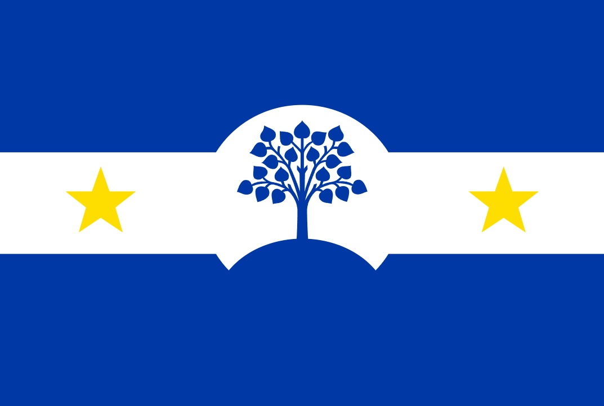
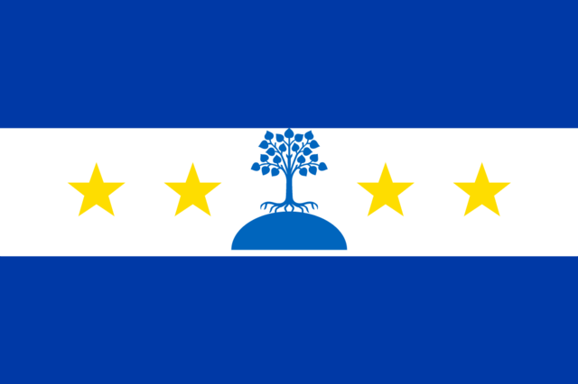
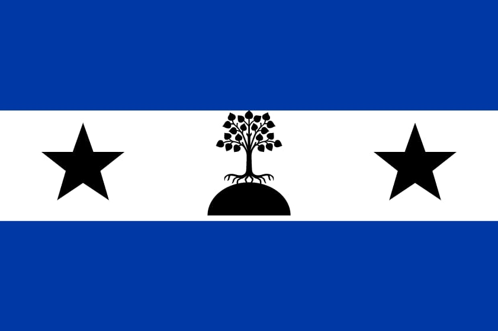
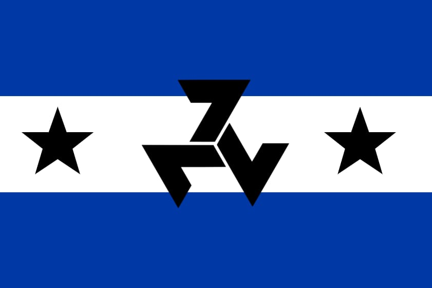
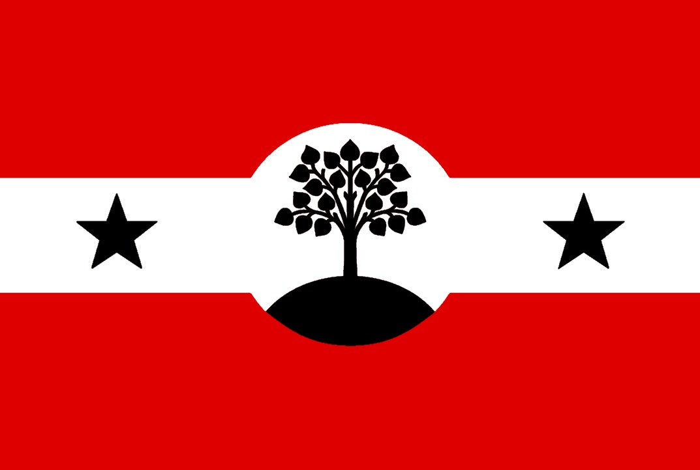
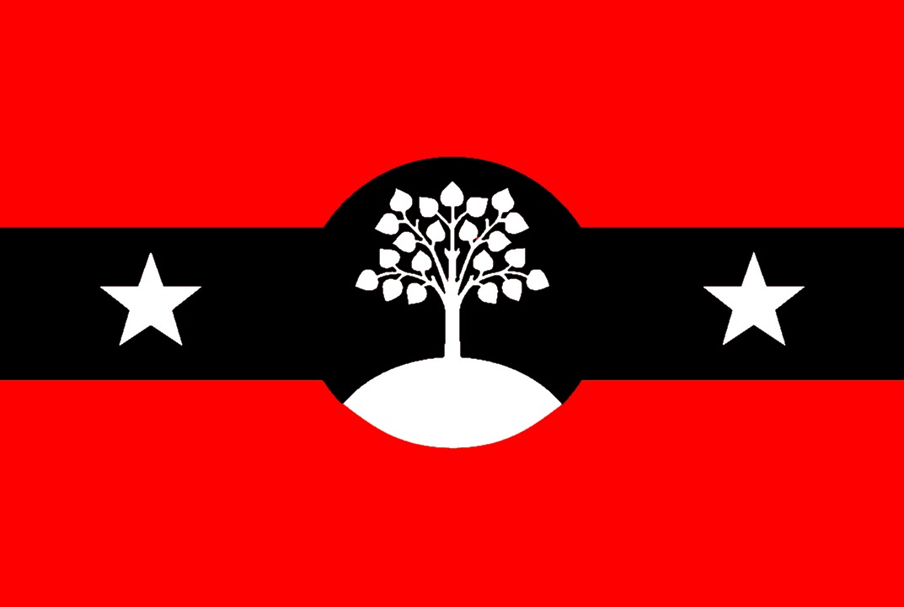
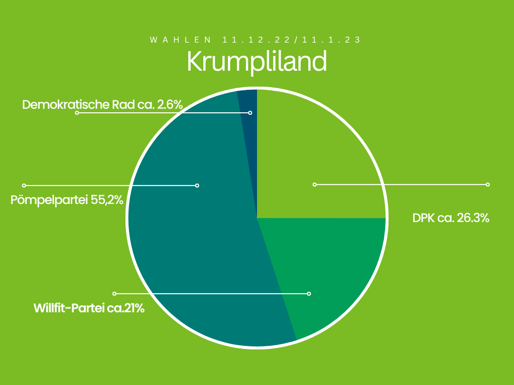
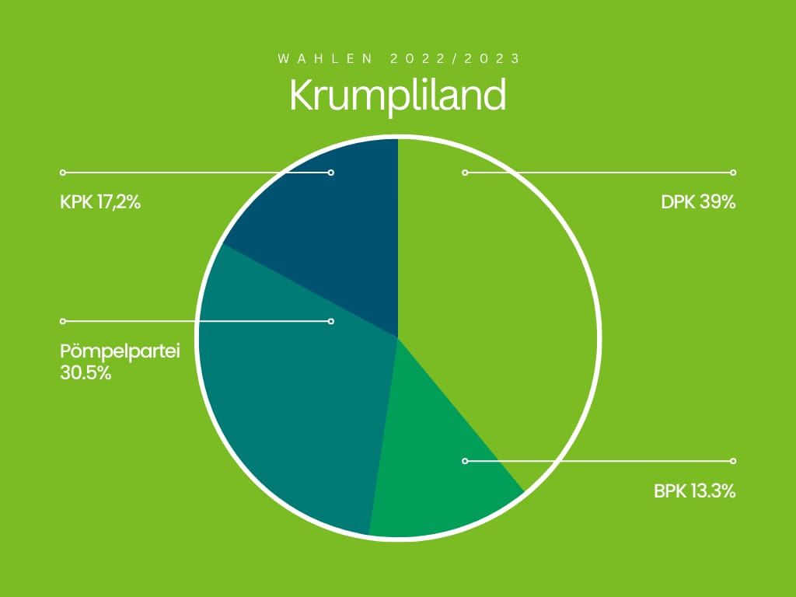
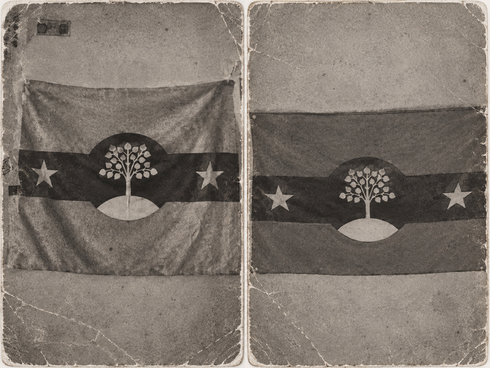
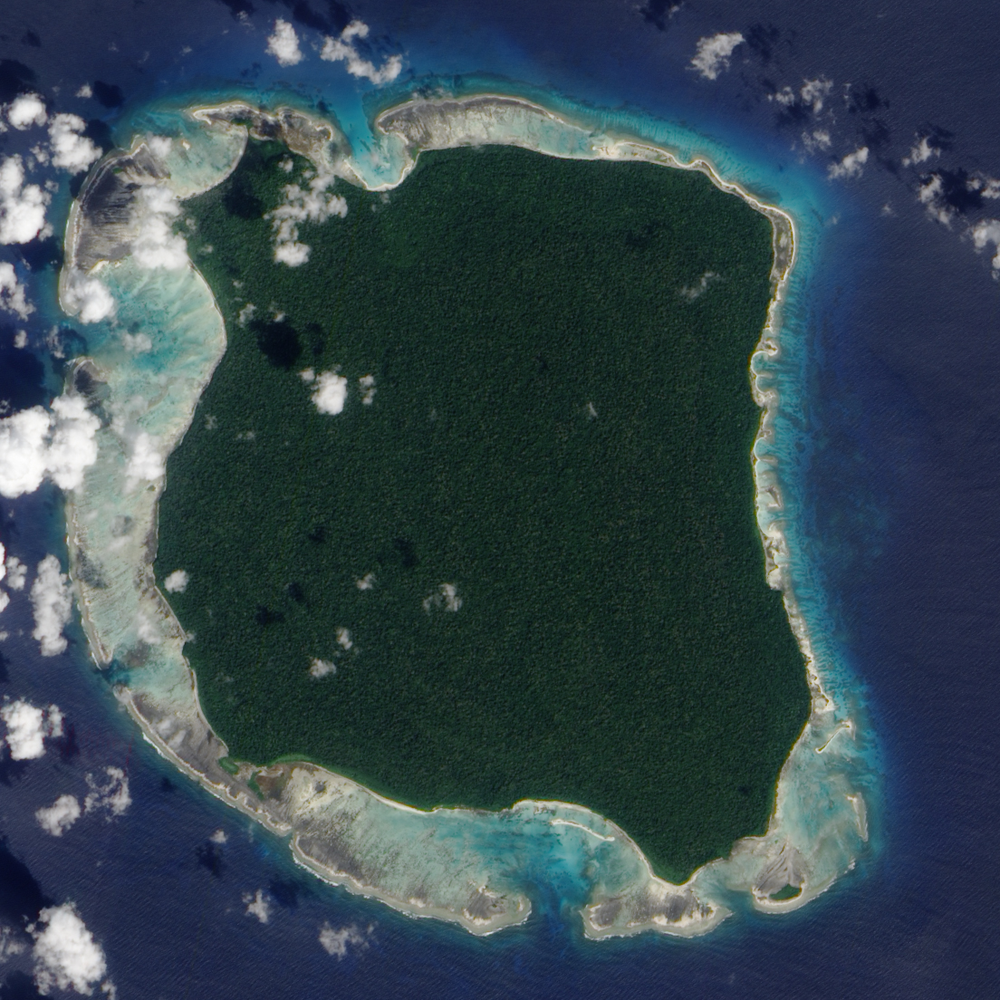

|
 Flagge |
|
| Amtssprache | Deutsch, Krumplisch |
|---|---|
| Hauptstadt | Krumplihausen |
| Staats- und Regierungsform | Dualistische Republik |
| Standort | Im Herzen der Bürger (und in Gedanken auf North Sentinel Island) |
| Einwohnerzahl | Schätzungsweise 2 |
| Währung | keine |
| Gründung | 9. September 2022 |
Krumpliland (offiziell Republik Krumpliland) ist ein Staat, der am 9. September 2022 gegründet wurde. Die Republik durchlief seitdem mehrere politische und flaggentechnische Phasen. Die Republik ist bekannt für ihre wechselhafte Geschichte, die von der Pömpelkrise, dem Verrat durch Máté Vida und einer langen Phase der Stille geprägt ist.
Die Republik Krumpliland wurde am 9. September 2022 gegründet. In den ersten zwei Tagen nach der Gründung wurde eine provisorische Flagge verwendet. Seitdem hat das Land mehrere Flaggenwechsel und politische Krisen erlebt.
Die Flaggen der Republik Krumpliland spiegeln die wechselvolle Geschichte des Landes wider:





In der Geschichte der Republik Krumpliland fanden bisher drei Wahlen statt. Die Ergebnisse werden in den folgenden Tabellen und Diagrammen dargestellt.

| Partei | Stimmenanteil |
|---|---|
| DPK (Dualistische Partei Krumpliland) | 39 % |
| Pömpelpartei | 30,5 % |
| KPK (Kommunistische Partei Krumplilands) | 17,2 % |
| BPK (Biersäufer-Partei) | 13,3 % |
(Pömpelparteikrise)
| Partei | Stimmenanteil |
|---|---|
| Pömpelpartei | 55,2 % |
| DPK (Dualistische Partei Krumpliland) | 26,3 % |
| Willfit-Partei | 21 % |
| Demokratischer Rad | 2,6 % |

| Partei | Stimmenanteil |
|---|---|
| DPK (Dualistische Partei Krumpliland) | 58,31 % |
| Willfit-Partei | 25 % |
| Lachssiche-Partei | 8,33 % |
| Demokratischer Rad | 8,33 % |
Die folgende Grafik zeigt den geschätzten Verlauf der Anzahl von Personen, die jemals krumpliländische Ergebnisse in Form von Produkten, Videos und Slogans gesehen haben. Wichtige historische Ereignisse sind als Punkte markiert.
Die Republik Krumpliland ist bekannt für ihre vielfältigen und teils unkonventionellen Projekte. Die folgenden Bilder geben einen Einblick:

